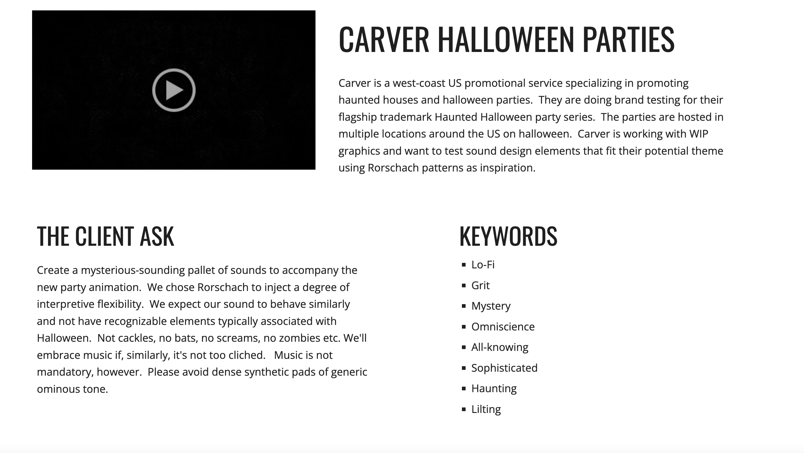

Carver Halloween Parties
This was my midterm for my Audio for Video 2 class. The company and video was created by my professor Spencer Shafter and I created the audio logo (mnemonic). The "client" did not want cliche halloween sounds or dense pads. I created an overall eerie energy to the clip with the backgrounds and used more of a wet sound for the rorschach test images as they morph. I included a human element with the breath as the logo appears which can also be used on its own outside the contect of the whole clip. The logo holds for a long time at the end so I included the footsteps to door slam to create a sonic ending for the clip. The sounds were recorded by myself and found on soundly
